25+ Make Ahead Christmas Appetizers
📌 Save to Pinterest
The best Christmas parties are the ones where the host actually gets to enjoy them. These twenty-five make-ahead Christmas appetizers are built for exactly that — cheese balls, pinwheels, stuffed mushrooms, dips and warm bites you can prep one to three days before, then chill, bake or plate when guests arrive. Make a few from each group, set out crackers and toothpicks, and the table takes care of itself.
How to plan a make-ahead appetizer spread
Pick a mix, not a single style: one cheese ball, one pinwheel, one warm bite and two dips cover every taste. Prep in stages — dips and cheese balls first, since they keep three days; pinwheels and stuffed mushrooms the day before; anything baked, like brie cups and sausage rolls, goes in the oven just before guests arrive. Keep cold food cold and hot food hot, and set out small plates so the table stays tidy. If you are feeding a crowd, double the dips and the meatballs — they are always the first to disappear.
Good to know: Everything is written in American English, and measurements use US customary units — cups, tablespoons, and Fahrenheit — for cooks in the United States. Always follow safe food-handling guidance, and check labels for allergens when cooking for others.
Food safety: cook ground sausage to 160°F (71°C) and chicken livers to 165°F (74°C). Bake egg dishes such as quiche to 160°F (71°C). Heat pre-cooked meatballs until steaming hot throughout. Check with a food thermometer.
Cheese balls & pinwheels
Start with the make-ahead classics — cheese balls and pinwheels that only get better after a night in the fridge.
1. Classic Holiday Cheese Ball
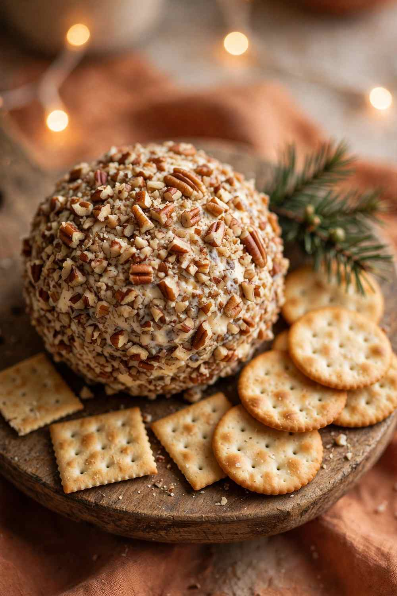
A creamy cheese ball rolled in crunchy pecans.
Ingredients
- 16 oz cream cheese
- 1 1/2 cups shredded cheddar
- 1/4 cup chopped green onions
- 1 tsp garlic powder
- 1 tsp Worcestershire sauce
- 1 cup chopped pecans
Directions
- Beat cream cheese, cheddar, green onions, garlic powder and Worcestershire until smooth.
- Shape into a ball and wrap in plastic.
- Chill overnight, then roll in pecans before serving with crackers.
2. Cranberry Pecan Cheese Ball

Sweet-tart cranberries in a creamy ball.
Ingredients
- 16 oz cream cheese
- 1 cup dried cranberries
- 1 cup chopped pecans
- 2 tbsp honey
- 1 tsp orange zest
- 1/4 cup chopped green onions
Directions
- Beat cream cheese with honey and orange zest.
- Stir in cranberries, pecans and green onions.
- Shape into a ball, wrap and chill at least 4 hours.
- Roll in extra pecans and cranberries before serving.
3. Spinach and Feta Pinwheels

Flaky spirals, baked or served cold.
Ingredients
- 1 sheet puff pastry
- 1 cup chopped spinach
- 1/2 cup crumbled feta
- 4 oz cream cheese
- 2 garlic cloves
- 1 egg for wash
Directions
- Mix spinach, feta, cream cheese and garlic.
- Spread over the pastry and roll into a log.
- Chill 1 hour, slice into 1/2-inch rounds and bake at 400°F for 15 minutes until golden.
4. Turkey Cranberry Pinwheels

Deli turkey, cranberry and cream cheese.
Ingredients
- 4 large flour tortillas
- 8 oz cream cheese
- 1/2 cup cranberry sauce
- 8 slices deli turkey
- 1 cup baby spinach
- salt and pepper
Directions
- Spread cream cheese on each tortilla, then cranberry sauce.
- Layer turkey and spinach, roll tightly and wrap in plastic.
- Chill overnight, then slice into 1-inch pinwheels.
5. Smoked Salmon Pinwheels
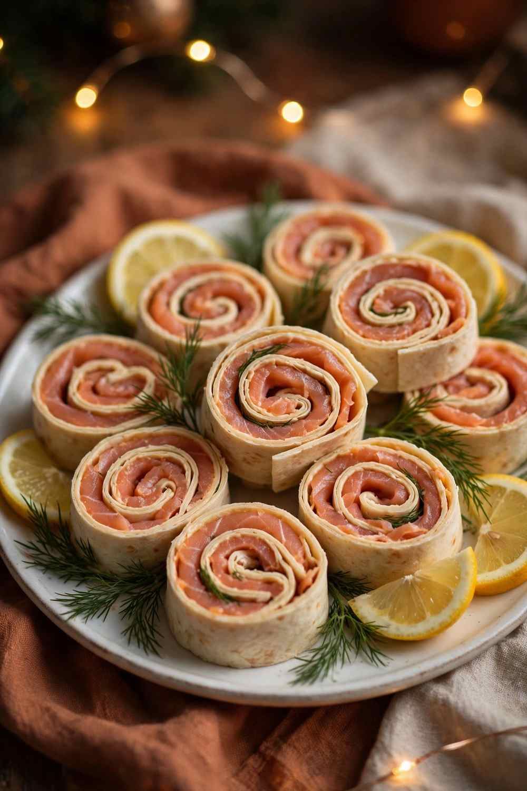
Smoky salmon and dill in soft tortillas.
Ingredients
- 4 large flour tortillas
- 8 oz cream cheese
- 8 oz smoked salmon
- 2 tbsp chopped dill
- 1 tbsp lemon juice
- 1/2 cup chopped cucumber
Directions
- Mix cream cheese with dill and lemon juice.
- Spread on tortillas, layer salmon and cucumber.
- Roll tightly, wrap and chill overnight.
- Slice into 1-inch pinwheels.
Stuffed mushrooms & warm bites
These are the warm, savory bites — stuffed mushrooms, puff pastry cups and marinated plates that wait patiently in the fridge.
6. Stuffed Mushrooms with Sausage

Savory sausage filling, baked golden.
Ingredients
- 24 large mushrooms
- 1/2 lb Italian sausage
- 4 oz cream cheese
- 1/4 cup breadcrumbs
- 2 garlic cloves
- 2 tbsp chopped parsley
Directions
- Remove stems and chop them fine.
- Brown sausage with garlic and chopped stems.
- Stir in cream cheese, breadcrumbs and parsley.
- Fill the caps, cover and chill up to 2 days.
- Bake at 375°F for 20 minutes.
Food safety: cook the sausage to 160°F (71°C) — check with a food thermometer.
7. Stuffed Mushrooms with Spinach and Cheese
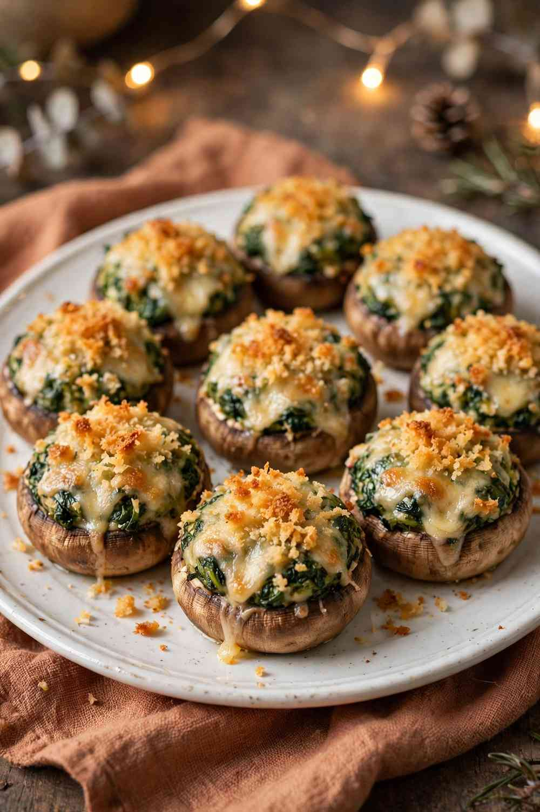
A meat-free stuffed mushroom.
Ingredients
- 24 large mushrooms
- 1 cup chopped spinach
- 4 oz cream cheese
- 1/2 cup shredded mozzarella
- 2 garlic cloves
- 1/4 cup breadcrumbs
Directions
- Chop the stems and cook with spinach and garlic until wilted.
- Stir in cream cheese and mozzarella.
- Fill the caps, cover and chill up to 2 days.
- Top with breadcrumbs and bake at 375°F for 20 minutes.
8. Warm Brie Cups with Cranberry and Walnut
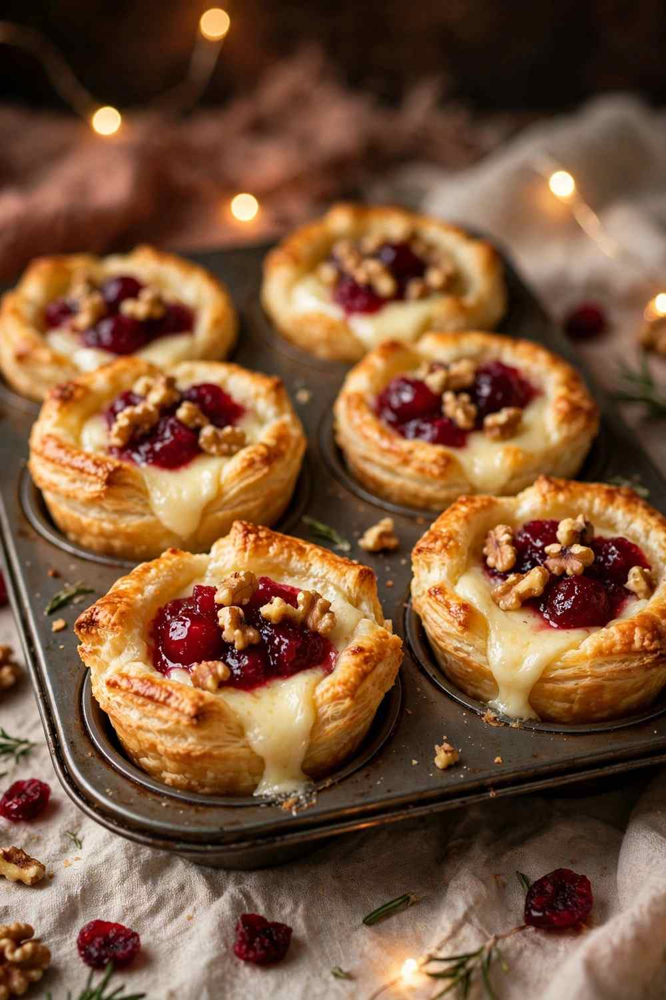
Melty brie in puff pastry cups.
Ingredients
- 1 sheet puff pastry
- 8 oz brie
- 1/2 cup cranberry sauce
- 1/4 cup chopped walnuts
- 1 egg for wash
Directions
- Cut pastry into 12 squares and press into a muffin tin.
- Add brie, cranberry sauce and walnuts.
- Cover and chill up to 1 day.
- Brush with egg wash and bake at 375°F for 15 minutes until puffed.
9. Goat Cheese Stuffed Dates with Pecans
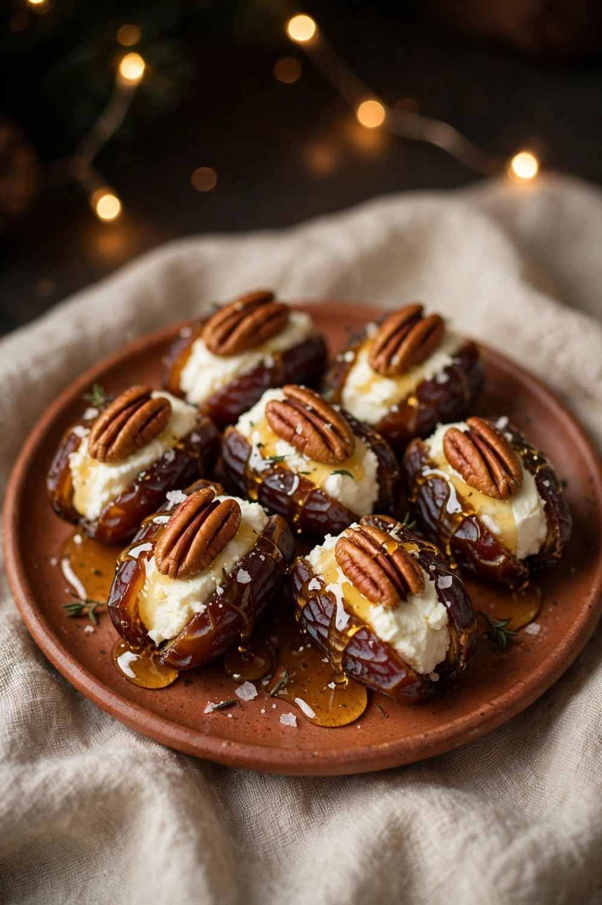
Sweet dates, tangy goat cheese.
Ingredients
- 24 pitted dates
- 4 oz goat cheese
- 1/4 cup chopped pecans
- 2 tbsp honey
- fresh thyme
Directions
- Slice dates open and stuff with goat cheese.
- Press a pecan half into each and drizzle with honey.
- Chill in a covered container up to 3 days.
- Sprinkle with thyme before serving.
10. Marinated Mozzarella and Cherry Tomatoes

Bright, herby, ready in the fridge.
Ingredients
- 8 oz mozzarella pearls
- 1 cup cherry tomatoes
- 1/4 cup olive oil
- 2 tbsp balsamic vinegar
- 2 garlic cloves
- 1 tbsp chopped basil
Directions
- Halve the tomatoes and toss with mozzarella, oil, vinegar, garlic and basil.
- Cover and marinate in the fridge up to 3 days.
- Serve with toothpicks.
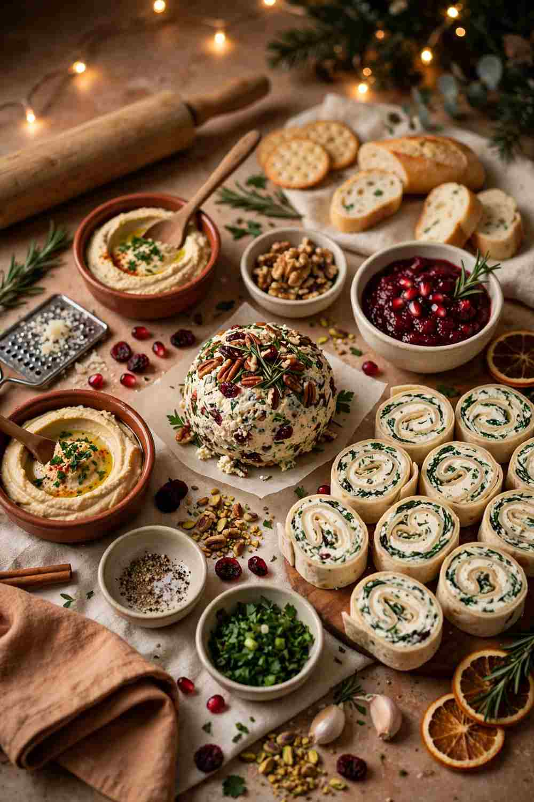
Prosciutto, meatballs & shrimp
A little something for every guest — salty prosciutto, slow-cooker meatballs, deviled eggs and chilled shrimp.
11. Prosciutto Wrapped Asparagus Spears

Salty prosciutto around crisp asparagus.
Ingredients
- 24 asparagus spears
- 12 slices prosciutto
- 2 tbsp olive oil
- 1 tbsp lemon juice
- shaved Parmesan
- black pepper
Directions
- Blanch asparagus for 2 minutes, then chill in ice water and pat dry.
- Cut prosciutto slices in half lengthwise and wrap each spear.
- Drizzle with olive oil and lemon juice.
- Cover and chill up to 2 days.
- Top with shaved Parmesan before serving.
12. Honey Mustard Glazed Cocktail Meatballs

Sweet, tangy, slow-cooker easy.
Ingredients
- 2 lbs frozen cocktail meatballs
- 1/2 cup honey
- 1/4 cup Dijon mustard
- 1/4 cup brown sugar
- 1 tbsp apple cider vinegar
Directions
- Whisk honey, mustard, brown sugar and vinegar.
- Add meatballs and sauce to a slow cooker.
- Cook on low 3 hours, stirring once.
- Serve warm from the slow cooker.
Food safety: heat the meatballs until steaming hot throughout.
13. Slow Cooker Cranberry Meatballs
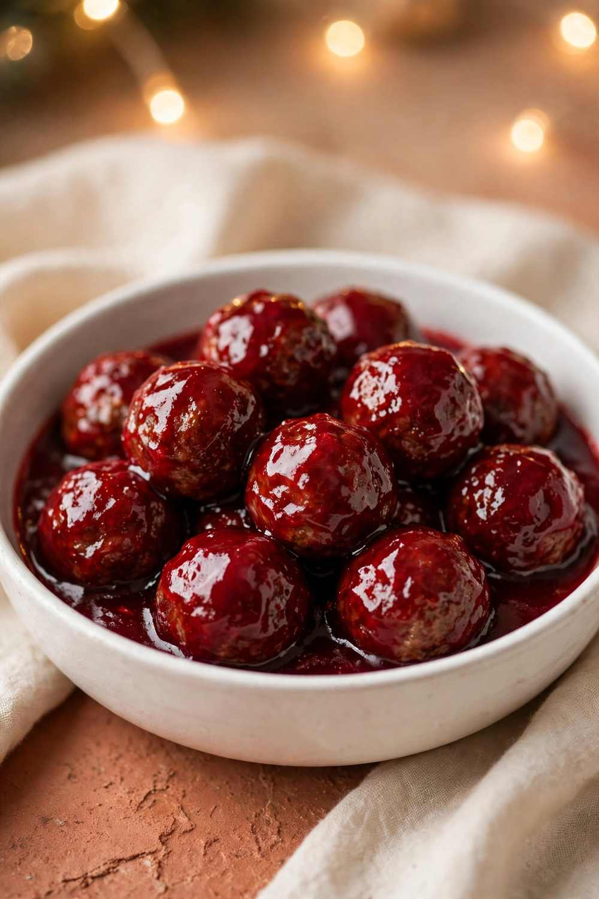
Festive cranberry glaze, hands-off.
Ingredients
- 2 lbs frozen cocktail meatballs
- 1 can (14 oz) cranberry sauce
- 1 cup barbecue sauce
- 1 tbsp brown sugar
- 1 tsp chili powder
Directions
- Stir cranberry sauce, barbecue sauce, brown sugar and chili powder in a slow cooker.
- Add meatballs and coat.
- Cook on low 3 hours, stirring once.
- Serve warm.
Food safety: heat the meatballs until steaming hot throughout.
14. Curried Deviled Eggs

Classic deviled eggs with warm curry spice.
Ingredients
- 12 eggs
- 1/3 cup mayonnaise
- 1 tbsp Dijon mustard
- 1 tsp curry powder
- 1 tsp white vinegar
- chopped chives
- paprika
Directions
- Hard-boil eggs for 10 minutes, cool and peel.
- Halve and mash yolks with mayonnaise, mustard, curry powder and vinegar.
- Pipe back into whites, cover and chill up to 2 days.
- Dust with paprika and chives.
15. Shrimp Cocktail with Cocktail Sauce

Chilled shrimp, zesty sauce.
Ingredients
- 2 lbs large shrimp
- 1 lemon
- 1 cup ketchup
- 2 tbsp horseradish
- 1 tbsp lemon juice
- 1 tsp Worcestershire sauce
Directions
- Boil shrimp with lemon for 3 minutes until pink; chill in ice water.
- Stir ketchup, horseradish, lemon juice and Worcestershire into a sauce.
- Chill both up to 2 days.
- Serve shrimp over ice with sauce.
Dips & spreads
Every good appetizer table needs dips — make these two or three days ahead and let the flavors deepen.
16. Baked Brie with Cranberry Sauce

Warm, gooey brie under cranberries.
Ingredients
- 1 wheel (8 oz) brie
- 1/2 cup cranberry sauce
- 1/4 cup chopped pecans
- 1 tbsp honey
- crackers for serving
Directions
- Place brie in a small baking dish and top with cranberry sauce and pecans.
- Cover and chill up to 2 days.
- Bake at 350°F for 15 minutes until soft.
- Drizzle with honey.
17. Roasted Red Pepper Dip

Smoky, creamy, make-ahead dip.
Ingredients
- 1 jar (12 oz) roasted red peppers
- 8 oz cream cheese
- 1/2 cup feta
- 2 garlic cloves
- 1 tbsp lemon juice
- 1/4 tsp red pepper flakes
Directions
- Blend peppers, cream cheese, feta, garlic and lemon juice until smooth.
- Stir in red pepper flakes.
- Chill in a covered bowl up to 3 days.
- Serve with pita chips.
18. Creamy Caramelized Onion Dip

Sweet onions in a rich dip.
Ingredients
- 2 large onions
- 2 tbsp butter
- 1 cup sour cream
- 1/2 cup mayonnaise
- 1 tsp Worcestershire sauce
- salt and pepper
Directions
- Cook onions in butter on low for 25 minutes until deep golden.
- Cool, then stir into sour cream, mayonnaise and Worcestershire.
- Chill up to 3 days.
- Serve with potato chips.
19. White Bean and Rosemary Dip
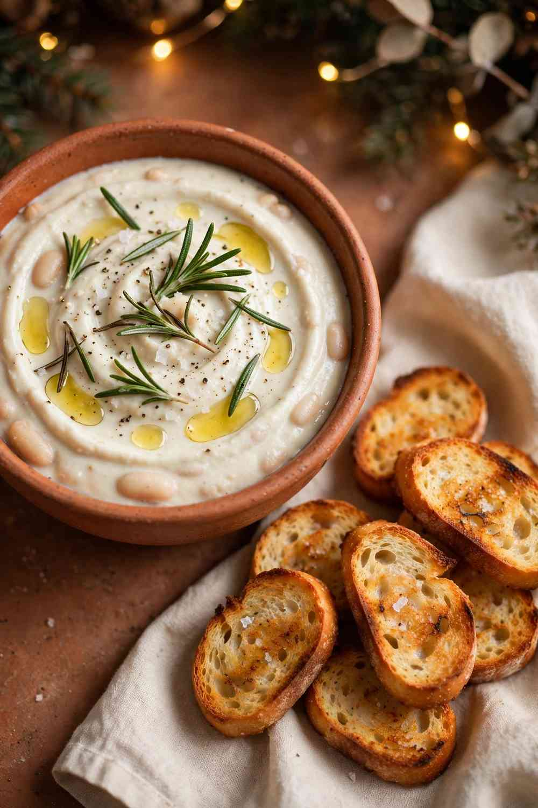
Smooth, herby, lighter dip.
Ingredients
- 1 can (15 oz) white beans
- 2 tbsp olive oil
- 2 garlic cloves
- 1 tbsp lemon juice
- 1 tsp chopped rosemary
- salt and pepper
Directions
- Drain and rinse the beans.
- Blend with oil, garlic, lemon juice and rosemary until smooth.
- Chill in a covered bowl up to 3 days.
- Serve with crostini.
20. Olive Tapenade Crostini
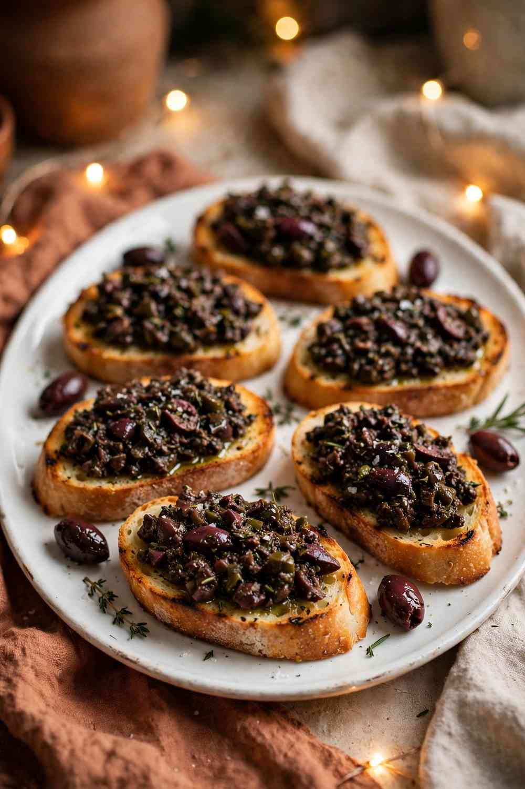
Salty tapenade on crisp bread.
Ingredients
- 1 cup mixed olives
- 2 tbsp capers
- 2 garlic cloves
- 1/4 cup olive oil
- 1 baguette
- 1 tbsp lemon juice
Directions
- Pulse olives, capers, garlic, oil and lemon juice into a coarse paste.
- Slice and toast the baguette.
- Chill the tapenade up to 4 days.
- Spread on crostini just before serving.
Pastry bites & make-ahead finishes
Finish the spread with flaky pastry, silky pâté and bite-size quiches — all prepped ahead, baked or plated at the last minute.
21. Mini Sausage Rolls
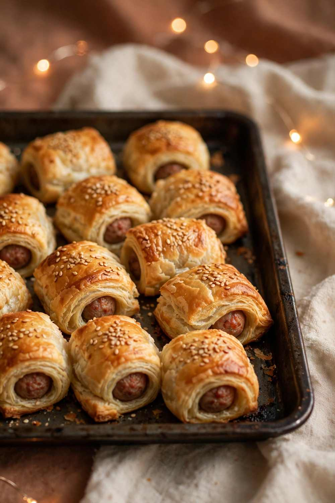
Flaky pastry around seasoned sausage.
Ingredients
- 1 lb pork sausage
- 1 sheet puff pastry
- 1 egg for wash
- 1 tsp dried sage
- sesame seeds
Directions
- Mix sausage with sage and shape into a long log.
- Wrap in pastry, seal and chill 1 hour.
- Slice into 1-inch pieces, brush with egg and sprinkle sesame.
- Bake at 400°F for 20 minutes until golden.
Food safety: cook the pork sausage to 160°F (71°C) — check with a food thermometer.
22. Chicken Liver Pâté with Crackers
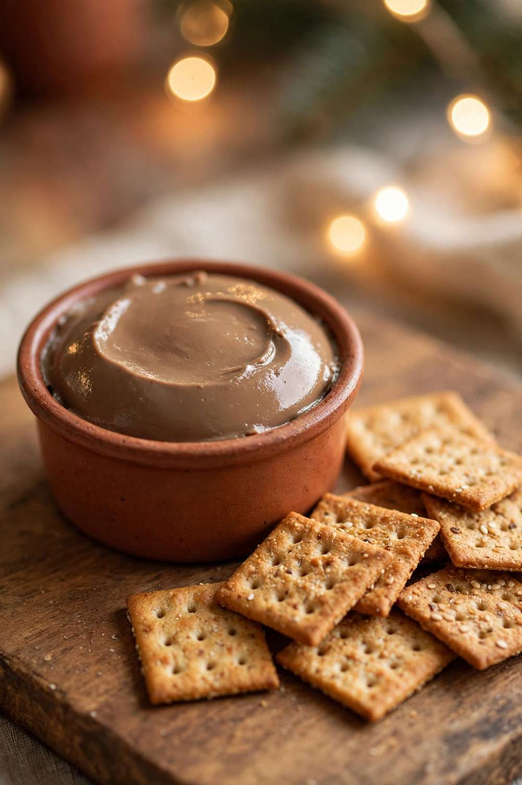
Silky pâté, made days ahead.
Ingredients
- 1 lb chicken livers
- 1/2 cup butter
- 1 onion
- 2 garlic cloves
- 2 tbsp brandy
- 1 tsp thyme
- salt and pepper
Directions
- Cook onion and garlic in butter, then add livers and cook 5 minutes.
- Add brandy and thyme.
- Blend with remaining butter until smooth.
- Chill in a ramekin up to 4 days.
- Serve with crackers.
Food safety: cook the chicken livers to 165°F (74°C).
23. Dill and Cream Cheese Cucumber Bites
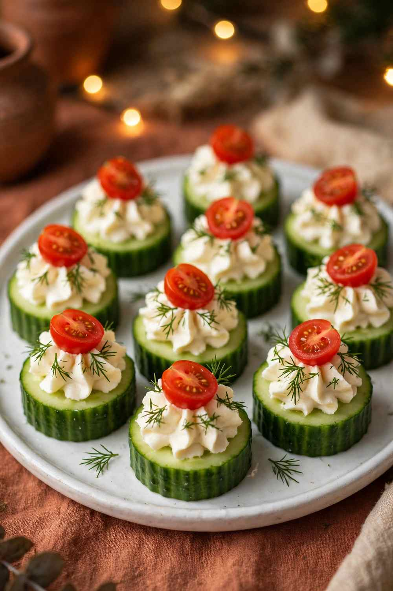
Cool, crisp, no-cook bites.
Ingredients
- 2 cucumbers
- 8 oz cream cheese
- 2 tbsp chopped dill
- 1 tbsp lemon juice
- 1/4 tsp garlic powder
- cherry tomato halves
Directions
- Slice cucumbers into 1/2-inch rounds.
- Mix cream cheese with dill, lemon and garlic powder.
- Pipe onto the rounds, cover and chill up to 1 day.
- Top with tomato halves.
24. Cranberry Jalapeño Cream Cheese Dip
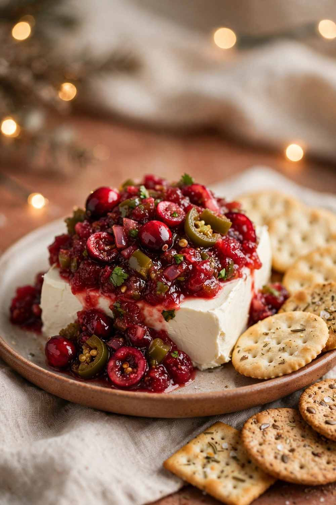
Sweet heat over cream cheese.
Ingredients
- 12 oz fresh cranberries
- 1 jalapeño
- 1/2 cup sugar
- 1/4 cup chopped cilantro
- 16 oz cream cheese
- crackers
Directions
- Pulse cranberries, jalapeño, sugar and cilantro into a chunky relish.
- Chill the relish up to 3 days.
- Spread cream cheese on a plate and spoon the relish over it.
- Serve with crackers.
25. Mini Quiches with Ham and Cheese

Bite-size quiches, baked ahead.
Ingredients
- 1 sheet puff pastry
- 4 eggs
- 1/2 cup milk
- 1/2 cup diced ham
- 1/2 cup shredded Swiss cheese
- 1/4 tsp nutmeg
Directions
- Cut pastry into 12 squares and press into a muffin tin.
- Whisk eggs, milk and nutmeg; stir in ham and cheese.
- Fill the cups and chill up to 1 day.
- Bake at 375°F for 20 minutes until set.
Food safety: bake the quiches until they reach 160°F (71°C) in the center.

Make-ahead & serving tips
Prep in the right order: dips and cheese balls keep up to three days in the fridge, pinwheels and stuffed mushrooms are best made the day before, and anything baked — brie cups, sausage rolls, mini quiches — goes in the oven just before serving. Keep cold appetizers chilled until the last minute and hot ones hot in a low oven or slow cooker. Set out small plates, napkins and toothpicks so guests can help themselves, and label anything with nuts or shellfish. Leftovers keep covered in the fridge for up to 3 days — reheat baked bites gently in the oven.
Related articles
More roundups from the same table:
- 35+ Easy Christmas Appetizers for a Crowd — dips, bites, cheese boards and warm starters for your holiday party.
- 25+ Easy New Year's Eve Appetizers for a Crowd — bite-size party snacks, dips and finger foods for ringing in the New Year.
- 25+ Christmas Side Dishes for Your Holiday Table — roasted vegetables, creamy potatoes, stuffing and cranberry sauce.
- 20+ Christmas Air Fryer Recipes for Easy Holiday Cooking — crispy appetizers, roasted vegetables and festive desserts.
Keep exploring
- Browse the Appetizers & Snacks roundups — starters, party bites and snacks for every gathering.
- Browse all six categories — breakfast, lunch and dinner, desserts, air fryer, healthy recipes, and appetizers.
- More about the kitchen — what The Tasty Recipe Co is and how it works.
About The Tasty Recipe Co: Learn how we research, organize and review our food collections — see our About Us and Editorial Policy pages.
Recipe results can vary with ingredients, equipment, and technique. See our Disclaimer for food-safety and allergy notes.